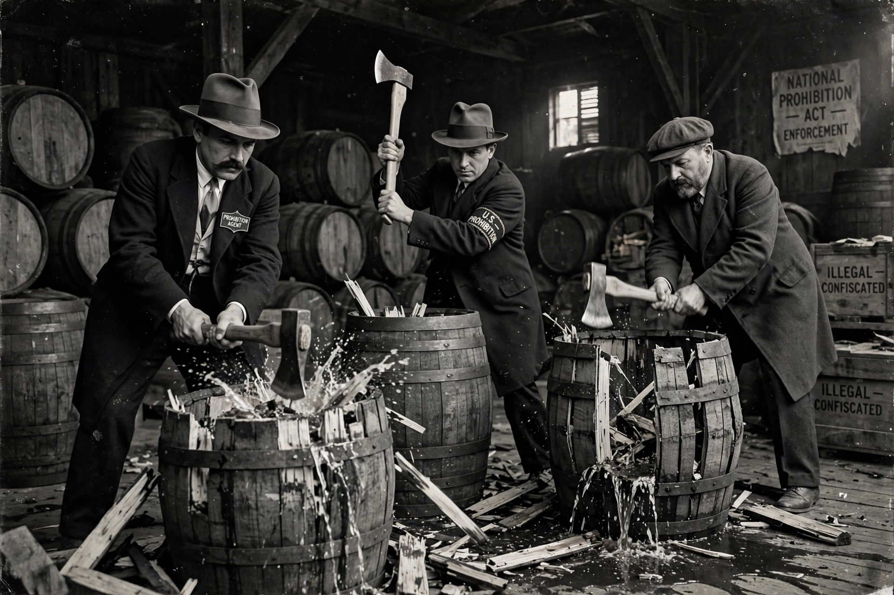

Prohibition is the act or practice of forbidding something by law; more particularly the term refers to the banning of the manufacture, storage (whether in barrels or in bottles), transportation, sale, possession, and consumption of alcoholic beverages. The term is also used to refer to a period of time during which such bans are enforced.

The most famous example is the nationwide constitutional ban in the United States from 1920 to 1933, established by the Eighteenth Amendment and enforced by the Volstead Act. It banned the production, importation, transportation, and sale of intoxicating liquors. The era saw the rise of illegal speakeasies, smuggling ("rum-running"), and organised crime syndicates that profited from bootlegging, associated with figures such as Al Capone. Growing public disillusionment, lost tax revenue, and crime led to repeal by the Twenty-first Amendment in 1933, the only instance of a constitutional amendment being repealed by another.
Prohibition has been enacted in various forms elsewhere: Canada had national prohibition briefly during and after the First World War, with provincial bans lasting into the 1920s; Iceland banned beer until 1989; Russia restricted vodka sales during the First World War; and several countries today prohibit alcohol on religious grounds, including Saudi Arabia, Iran, and parts of India such as Gujarat and Bihar. The Nordic countries long restricted alcohol through state monopolies rather than full bans.
By extension, "prohibition" describes legal regimes banning recreational drugs, such as the international system established by the 1961 Single Convention on Narcotic Drugs and the US "war on drugs". Debates over alcohol prohibition continue to inform arguments about drug policy, with critics pointing to black markets and enforcement costs, and supporters to harms from consumption.